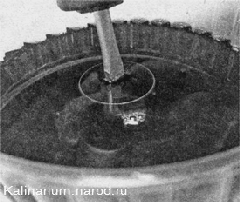

Гидротолкатели снятие и установкаСнятие 1. Снимаем распределительные валы. При сборке гидротолкатели рекомендуется устанавливать на прежние места. 2. Магнитом извлекаем гидротолкатели из посадочных отверстий и маркером помечаем их порядковые номера. 3. Чтобы грязь не попала внутрь гидротолкателей и не вывела их из строя, раскладываем толкатели на чистом листе бумаги. Установка Устанавливаем гидротолкатели в обратной последовательности. Совет Перед установкой опустите каждый гидротолкатель в емкость с чистым моторным маслом. Нажмите несколько раз на клапан компенсатора до прекращения выхода пузырьков воздуха, чтобы заполнить его внутреннюю полость маслом.  |